Cảnh dựng sẵn góc nhìn chéo (isometric), phong cách "đồ chơi mềm". Mỗi vật có cấp độ: bé đạt gì thì nâng cấp đúng vị trí đó (ảnh 2–4 và 7–8 cho thấy cấp). Ảnh 1 là toàn cảnh đầy đủ; 5–6 là buổi trong ngày; 9–10 là cận cảnh; ảnh 11 là màn chọn cây để trồng trên ô đất xám (đất xám trống → bé chọn cây → đất nâu có cây). Đây là bản đề xuất để duyệt, chủ site sẽ thay từng phần để tối ưu. Sinh bằng node scripts/learn/gen-scene-art.js, không sửa tay.
Ảnh 1/11Toàn cảnh khu vườn (ban ngày): nhà ngói, tường đá, ruộng, cây táo, ao, cối xay gió, kho

Ảnh 2/11Cấp 1: mới bắt đầu, lều lá, rào tre, một ô trồng

Ảnh 3/11Cấp 2: nhà tranh, rào gỗ, giếng xây, hai ô trồngẢnh 4/11Cấp 3: nhà tường, tường đá, kho, cối xay, bốn ô trồngẢnh 5/11Hoàng hôn (cùng khu vườn, cấp đầy đủ)

Ảnh 6/11Ban đêm: đèn sáng, đom đóm, trăngẢnh 7/11Cận cảnh ngôi nhà qua 4 cấp: lều lá → nhà tranh → nhà tường → nhà ngóiẢnh 8/11Chọn kiểu: 6 loại hàng rào (dải liền) và 5 loại lối đi (mảng liền)Ảnh 9/11Cận cảnh ruộng, cây táo, hoa oải hương, bụi câyẢnh 10/11Cận cảnh công trình: kho, giếng, cối xay gió, rơm, thùng, vật nuôiẢnh 11/11Đất xám trống: bé chạm chọn cây muốn trồng (đất xám → đất nâu có cây)